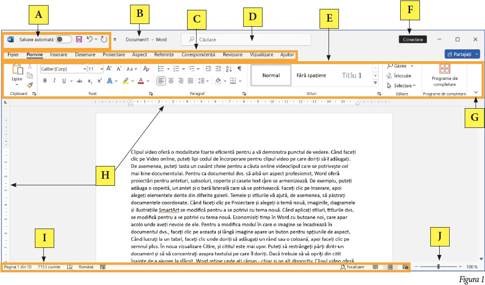

Descoperă!
2
Descoperă în Figura 1 interfața Word din suita Microsoft Office 2021.

A
Bara de instrumente Acces Rapid. Aici poți plasa comenzile pe care le folosești des.
B
Numele documentului.
C
File (tab-uri) de comenzi. Fiecare filă conține o panglică de comenzi.
D
Casetă de căutare. Se poate folosi pentru a căuta o comandă sau un cuvânt în document.
E
Panglică (ribbon) cu comenzi. Comenzile de pe o panglică sunt grupate pe categorii separate prin bare verticale.
F
Dacă utilizatorul a conectat aplicația cu contul de pe site-ul Microsoft, aici apare numele utilizatorului.
Dacă utilizatorul nu este conectat, acesta se poate conecta apăsând butonul Conectare.
G
La apăsarea acestui buton, apare un meniu din care poți selecta modul în care se afișează panglica cu comenzi.
H
Rigle. Se utilizează pentru a poziționa cu precizie textul, imaginile și alte obiecte.
I
Bară de stare în care se observă numărul paginii curente, numărul total de pagini și de cuvinte din
document, corectitudinea gramaticală a documentului, limba de redactare, modul de vizualizare a paginii.
J
Permite scalarea (mărirea sau micșorarea) paginii pe ecran. Butonul nu modifică dimensiunea paginii, ci doar
factorul de mărire/micșorare.
→ Dacă dorești să deschizi aplicația Word, tastează cuvântul Word,
în bara de căutare a Windows-ului apoi dă click pe Document necompletat.
Aplică!
3
Privește Figura 1 și răspunde următoarelor întrebări:
a) Câte pagini are documentul deschis? Câte cuvinte conține documentul?
b) Documentul este corect scris gramatical? Cum ai dedus răspunsul?
7